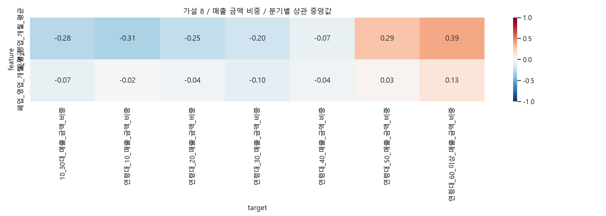
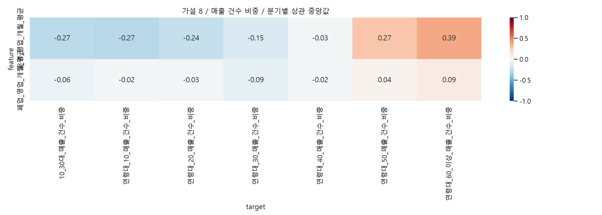

행정동·외식업 매출, 같은 분기의 지역 간 Spearman 탐색 분석입니다. 연령 확인 매출 합계를 분모로 금액·건수 비중을 각각 계산합니다. 건수는 고유 고객 수가 아닙니다. 비중은 합계 제약으로 서로 독립이 아니며 면적·상권규모·공간 의존성은 미통제입니다. 결측은 0으로 채우지 않고 쌍별 제외합니다. rho 중앙값은 통합 상관계수가 아닙니다. |중앙값|≥0.3, 방향 일치≥80%는 요약용 기준이지 통계적 가설 채택 기준이 아닙니다.
지역 내 영업 중인 점포와 폐업 점포의 평균 영업기간 지표입니다. 폐업률·개별 매장 수명 예측이 아닙니다. 서울 전체 평균은 분기 내 상수라 제외했습니다. 설명변수의 업종 범위와 외식업 매출 대상이 일치한다고 가정하지 않습니다.
| feature | target | median_rho | min_rho | max_rho | quarters | min_n | max_n | positive | negative | direction_consistency | exploratory_candidate |
|---|---|---|---|---|---|---|---|---|---|---|---|
| 운영_영업_개월_평균 | 연령대_60_이상_매출_건수_비중 | 0.387231 | 0.359687 | 0.396789 | 20 | 424 | 425 | 1.0 | 0.0 | 1.0 | True |
| 운영_영업_개월_평균 | 연령대_50_매출_건수_비중 | 0.273928 | 0.231141 | 0.307516 | 20 | 424 | 425 | 1.0 | 0.0 | 1.0 | False |
| 운영_영업_개월_평균 | 연령대_10_매출_건수_비중 | -0.273584 | -0.305718 | -0.214326 | 20 | 424 | 425 | 0.0 | 1.0 | 1.0 | False |
| 운영_영업_개월_평균 | 10_30대_매출_건수_비중 | -0.269177 | -0.292020 | -0.242640 | 20 | 424 | 425 | 0.0 | 1.0 | 1.0 | False |
| 운영_영업_개월_평균 | 연령대_20_매출_건수_비중 | -0.239095 | -0.265241 | -0.211108 | 20 | 424 | 425 | 0.0 | 1.0 | 1.0 | False |
| 운영_영업_개월_평균 | 연령대_30_매출_건수_비중 | -0.151416 | -0.186584 | -0.115678 | 20 | 424 | 425 | 0.0 | 1.0 | 1.0 | False |
| 폐업_영업_개월_평균 | 연령대_30_매출_건수_비중 | -0.089759 | -0.109489 | -0.031645 | 20 | 424 | 425 | 0.0 | 1.0 | 1.0 | False |
| 폐업_영업_개월_평균 | 연령대_60_이상_매출_건수_비중 | 0.085121 | 0.058334 | 0.115826 | 20 | 424 | 425 | 1.0 | 0.0 | 1.0 | False |


| feature | target | median_rho | min_rho | max_rho | quarters | min_n | max_n | positive | negative | direction_consistency | exploratory_candidate |
|---|---|---|---|---|---|---|---|---|---|---|---|
| 운영_영업_개월_평균 | 연령대_60_이상_매출_금액_비중 | 0.388558 | 0.356573 | 0.420435 | 20 | 424 | 425 | 1.00 | 0.00 | 1.00 | True |
| 운영_영업_개월_평균 | 연령대_60_이상_매출_건수_비중 | 0.387231 | 0.359687 | 0.396789 | 20 | 424 | 425 | 1.00 | 0.00 | 1.00 | True |
| 운영_영업_개월_평균 | 연령대_10_매출_금액_비중 | -0.312865 | -0.371949 | -0.251925 | 20 | 424 | 425 | 0.00 | 1.00 | 1.00 | True |
| 운영_영업_개월_평균 | 연령대_50_매출_금액_비중 | 0.286863 | 0.248271 | 0.315782 | 20 | 424 | 425 | 1.00 | 0.00 | 1.00 | False |
| 운영_영업_개월_평균 | 10_30대_매출_금액_비중 | -0.275670 | -0.305408 | -0.246436 | 20 | 424 | 425 | 0.00 | 1.00 | 1.00 | False |
| 운영_영업_개월_평균 | 연령대_50_매출_건수_비중 | 0.273928 | 0.231141 | 0.307516 | 20 | 424 | 425 | 1.00 | 0.00 | 1.00 | False |
| 운영_영업_개월_평균 | 연령대_10_매출_건수_비중 | -0.273584 | -0.305718 | -0.214326 | 20 | 424 | 425 | 0.00 | 1.00 | 1.00 | False |
| 운영_영업_개월_평균 | 10_30대_매출_건수_비중 | -0.269177 | -0.292020 | -0.242640 | 20 | 424 | 425 | 0.00 | 1.00 | 1.00 | False |
| 운영_영업_개월_평균 | 연령대_20_매출_금액_비중 | -0.248757 | -0.279452 | -0.225010 | 20 | 424 | 425 | 0.00 | 1.00 | 1.00 | False |
| 운영_영업_개월_평균 | 연령대_20_매출_건수_비중 | -0.239095 | -0.265241 | -0.211108 | 20 | 424 | 425 | 0.00 | 1.00 | 1.00 | False |
| 운영_영업_개월_평균 | 연령대_30_매출_금액_비중 | -0.201176 | -0.248601 | -0.174555 | 20 | 424 | 425 | 0.00 | 1.00 | 1.00 | False |
| 운영_영업_개월_평균 | 연령대_30_매출_건수_비중 | -0.151416 | -0.186584 | -0.115678 | 20 | 424 | 425 | 0.00 | 1.00 | 1.00 | False |
| 폐업_영업_개월_평균 | 연령대_60_이상_매출_금액_비중 | 0.125831 | 0.106559 | 0.163128 | 20 | 424 | 425 | 1.00 | 0.00 | 1.00 | False |
| 폐업_영업_개월_평균 | 연령대_30_매출_금액_비중 | -0.101029 | -0.119925 | -0.053616 | 20 | 424 | 425 | 0.00 | 1.00 | 1.00 | False |
| 폐업_영업_개월_평균 | 연령대_30_매출_건수_비중 | -0.089759 | -0.109489 | -0.031645 | 20 | 424 | 425 | 0.00 | 1.00 | 1.00 | False |
| 폐업_영업_개월_평균 | 연령대_60_이상_매출_건수_비중 | 0.085121 | 0.058334 | 0.115826 | 20 | 424 | 425 | 1.00 | 0.00 | 1.00 | False |
| 운영_영업_개월_평균 | 연령대_40_매출_금액_비중 | -0.073915 | -0.101414 | 0.004804 | 20 | 424 | 425 | 0.10 | 0.90 | 0.90 | False |
| 폐업_영업_개월_평균 | 10_30대_매출_금액_비중 | -0.073077 | -0.087602 | -0.049084 | 20 | 424 | 425 | 0.00 | 1.00 | 1.00 | False |
| 폐업_영업_개월_평균 | 10_30대_매출_건수_비중 | -0.056653 | -0.074614 | -0.032007 | 20 | 424 | 425 | 0.00 | 1.00 | 1.00 | False |
| 폐업_영업_개월_평균 | 연령대_20_매출_금액_비중 | -0.041144 | -0.057187 | -0.028857 | 20 | 424 | 425 | 0.00 | 1.00 | 1.00 | False |
| 폐업_영업_개월_평균 | 연령대_40_매출_금액_비중 | -0.039785 | -0.073072 | -0.022995 | 20 | 424 | 425 | 0.00 | 1.00 | 1.00 | False |
| 폐업_영업_개월_평균 | 연령대_50_매출_건수_비중 | 0.038864 | 0.007177 | 0.060660 | 20 | 424 | 425 | 1.00 | 0.00 | 1.00 | False |
| 폐업_영업_개월_평균 | 연령대_50_매출_금액_비중 | 0.029342 | 0.003106 | 0.047281 | 20 | 424 | 425 | 1.00 | 0.00 | 1.00 | False |
| 운영_영업_개월_평균 | 연령대_40_매출_건수_비중 | -0.029248 | -0.059152 | 0.041257 | 20 | 424 | 425 | 0.20 | 0.80 | 0.80 | False |
| 폐업_영업_개월_평균 | 연령대_20_매출_건수_비중 | -0.028016 | -0.040903 | -0.008596 | 20 | 424 | 425 | 0.00 | 1.00 | 1.00 | False |
| 폐업_영업_개월_평균 | 연령대_40_매출_건수_비중 | -0.020767 | -0.042193 | 0.033862 | 20 | 424 | 425 | 0.25 | 0.75 | 0.75 | False |
| 폐업_영업_개월_평균 | 연령대_10_매출_금액_비중 | -0.020652 | -0.091133 | 0.015805 | 20 | 424 | 425 | 0.15 | 0.85 | 0.85 | False |
| 폐업_영업_개월_평균 | 연령대_10_매출_건수_비중 | -0.018097 | -0.071447 | 0.019120 | 20 | 424 | 425 | 0.15 | 0.85 | 0.85 | False |